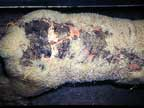

Photosensitisation is very important sign in many poisonings. It is the syndrome that develops when an animal in a state of photosensitivity is exposed to sunlight. Photosensitivity is the term used to describe the condition in which an animal has become hypersensitive to light because of a circulating substance referred to as the photodynamic or photosensitising agent. Sometimes "normal" animals, particularly neonates, can get sunburned.
Photosensitisation is the main clinical manifestation of a number of diseases of grazing animals some of which are of considerable economic importance. These include facial eczema in NZ and lupinosis in Australia. A fuller description of many diseases which produce photosensitisation is given under other headings. It is important however that the practising veterinarian understands the mechanisms of photosensitisation and the range of diseases in which it is a clinical feature.
From our limited understanding of photosensitisation it is believed that molecules of the photodynamic agent absorb light energy in specific wavelengths and are converted to a high energy state. These "excited" molecules, usually in the presence of oxygen, enter into a series of reactions with substrate molecules in the skin causing photosensitisation. Free radicals produced by such reactions cause structural changes in the lipid components of cellular membranes, especially those of lysosomes where photosensitizing agents concentrate.
The release of hydrolytic enzymes from ruptured lysosomes, and/or the chemical mediators of inflammation, leads to vascular permeability and associated changes characteristic of photosensitisation. Most photodynamic agents are coloured and all have the ability to fluoresce. Their absorption and action spectra are very similar. Although many potential photodynamic agents exist in the environment, relatively few are important in producing photosensitisation.
Photosensitivity can be caused directly by skin contact or following ingestion. In the latter case they must survive the detoxifying and excretory mechanisms of the animal. On the other hand some agents may arise from precursors following metabolic changes in the macerated plant, metabolism by gut organisms, liver metabolism or aberrant synthesis of endogenous pigments.
The most important photodynamic agent in ruminants is phylloerythrin, a normal degradation product of chlorophyll.
Photosensitisation diseases have been classified according to their pathogenesis. This allows a logical approach to their investigation and helps in understanding their control. In some diseases the photodynamic agent is not known and the pathogenesis is uncertain.
In general, photosensitisation can be classified into four types.
Table 58 Photosensitisation Diseases
| Type | Example | |
| Type I | Primary photosensitisation (Photodynamic agent ingested preformed) | Hypericin (St. John's wort) Unidentified agent (storksbill) Fagopyrin (buckwheat) Phenothiazine sulphoxide (Phenothiazine poisoning) |
| Type II | Photosensitisation due to aberrant pigment synthesis | Congenital porphyria (cattle and pigs) |
| Type III | Hepatogenous photosensitisation (normal metabolic products e.g. phylloerythrin, accumulate in tissues through faulty liver excretion) | Pithomyces Tribulus terrestris Panicum spp. Ngaio Lantana camara Lupinus spp. Blue green algae (Microcystis aeruginosa and others) Congenital photosensitisation of Southdowns |
| Type IV | Uncertain origin | Trefoil dermatitis Rape scald |
This group includes ingested or administered photodynamic agents that are absorbed and travel systemically to the skin, and agents reaching the skin directly.
The two classical examples of this type are buckwheat (Fagopyrum esculentum) and St Johns wort (Hypericum perforatum) poisoning in which the photodynamic agents are unmodified plant components fagopyrin and hypericin, respectively.
The active photodynamic agent may be produced from precursors, as was seen in phenothiazine poisoning where the photodynamic agent, phenothiazine sulphoxide, is produced in the gut from the precursor, phenothiazine.
Hypericism
Various species of Hypericum spp. (St John's wort) give rise to photosensitisation in animals eating them. This plant grows in waste places, pastures and roadsides in both the North and South Islands.
The photodynamic agent hypericin is a red fluorescent pigment found in semi-solid state in the black dots which are scattered over the surface of the leaves, stems and petals. Hypericin is present in the plant at all times and even persists when the plant is dried.
Sheep, cattle and horses may be affected (sheep most commonly).
Clinical signs signs of photosensitisation (as described below). In addition, extreme hyperaesthesia to touch or contact with cold water has been noted. Fording a stream or dipping causes acute and violent convulsions in sheep.
NB Other forms of photosensitisation e.g. facial eczema, cause only mild reactions of this kind.
Storksbill poisoning (Erodium spp.)
Typical photosensitisation (spring eczema) has been seen in lambs grazing on herbage which was mainly storksbill both in Australia and NZ (North Canterbury and Hawkes Bay). The photosensitizing agent has not been identified.
Fagopyrism
Fagopyrism is caused by the ingestion of fagopyrin from Polygonum fagopyrum or Fagopyrum esculentum (buckwheat). The disease occurs in sheep, cattle, goats, pigs and horses. Buckwheat is not commonly grown as a crop in NZ.
An inherited metabolic defect in cattle termed bovine erythropoietic porphyria (congenital porphyria) results in the formation of series I porphyrin isomers (uroporphyrin I and coproporphyrin I) instead of the series III isomers which alone are utilised for haem production. The presence of large amounts of series I isomers in plasma leads to photosensitisation which usually manifests itself at an early age. Characteristic lesions are the brown bones and pink teeth which fluoresce a deep orange red colour.
This form is the most important in ruminants. Initially an hepatoxin or other cause, results in liver dysfunction causing biliary stasis or inability to excrete certain pigments. Porphyrins which are normally conjugated in the liver and excreted in the bile overflow into the circulation and accumulate in body tissues where, in the skin, they can initiate a photodynamic reaction. In ruminants, phylloerythrin, the normal degradation product of chlorophyll is responsible.
Some common examples of hepatogenous photosensitisation found in NZ and Australia:
The toxin sporidesmin from the fungus Pithomyces chartarum is a hepatotoxin and produces liver damage and biliary occlusion. This causes secondary photosensitisation. It occurs most commonly in sheep and is recorded in New Zealand and Australia.
Ngaio poisoning
Myoporum laetum is one of the most poisonous of the native plants in NZ. Poisoning occurs frequently in cattle and has been recorded in sheep. Poisoning usually occurs when the branches of trees are brought down in a storm. The toxic principle is possibly ngaione and the leaves are the most toxic part of the plant.
Tribulosis
Tribulosis (yellow thick head) occurs in South Africa and Australia among sheep grazing Tribulus terrestris, a fodder plant.
Yellow big head
Yellow big head poisoning caused by Panicum spp.has produced photosensitisation in sheep in Australia and South Africa. In New Zealand broom corn millet (Panicum miliaceum) has caused poisoning in lambs (100 out of 500 died). The clinical signs of poisoning included photosensitisation and jaundice.
Lantana camara poisoning occurs in Australia. The toxic principle is lantadene A and the clinical signs of poisoning include anorexia, haemorrhagic gastroenteritis, ataxia and photosensitisation.
Lupinosis
Phomopsis leptostromiformis is a parasite of lupins and produces the mycotoxin phomopsin which produces progressive liver damage and ultimately may lead to photosensitisation of affected animals in the same manner as facial eczema. Sheep, cattle, goats and horses are all affected.
It should be noted that lupins may cause two other toxicoses in which photosensitisation is not a feature. They are:
Algal poisoning(Microcystis aeruginosa, M. flos aquae, Anacystis cyanea and others)
The ingestion of fresh water blue green algae has caused deaths and in less acute cases, liver damage, jaundice and photosensitisation in animals in all parts of the world.
Others
In some cases animals affected with hepatitis caused by carbon tetrachloride, copper poisoning, and ragwort may show mild evidence of photosensitisation. Other plants may be involved in overseas countries - remember that some of these may be grown in NZ gardens.
Congenital photosensitivityof Southdown rams
This unusual photosensitisation is seen in lambs of the Southdown breed and crosses in NZ and the USA. Lambs are normal at birth but become clinically affected when they start to graze at 3 - 7 weeks of age and are photosensitive for the rest of their lives. The condition is fatal unless shade is provided. The disease is inherited as a single recessive gene and is caused by a congenital defect in the excretion of biliary pigment and so phylloerythrin accumulates in the blood and becomes the photodynamic agent.
A similar type of photosensitivity has been reported in Corriedale sheep.
Ovine white liver disease
Photosensitisation is sometimes a feature of this disease along with poor growth rates in lambs and hoggets. It is believed to be a mycotoxicosis which only causes lesions and disease in cobalt deficient areas, although recent work has reproduced the disease with cobalt deficiency. It has mainly been recorded in the Northern parts of NZ. At autopsy the main feature is a fatty swollen liver.
Rape scald (Brassica napus) occurs in NZ. It is seen especially in weaned lambs in both islands, usually when the rape is fed in the immature state (rape should be fed when the leaves have a blue tinge and for only half - 1 hour at a time until lambs become used to it). Clinical signs include a marked oedema of the ears and neck and sometimes along the midline of the back with eventual necrosis and loss of skin. There is no liver damage but there may be haemoglobinuria. Recovery is rapid when the lambs are taken off the crop and put into the shade (i.e. high morbidity, low mortality).
Various forms of rape poisoning have been described. These include, respiratory, digestive, urinary and nervous forms, which may occur singly or as complexes. For the occasional animal which dies as a result of rape poisoning, oedema of the lungs and congestion of the intestines with blood in the lumen may be seen. As mentioned, haemoglobinuria may also be a feature.
Trefoil dermatitis is a photosensitivity disease of unknown aetiology and of sporadic and transitory occurrence in horses, cattle, sheep and pigs. It has been reported in Australia following the ingestion of bur medick (Medicago polymorpha) and in the USA following the ingestion of hay made from flood damaged lucerne (Medicago sativa). It has also been reported in animals grazing clovers. It is a sporadic and transient condition.
Spring Photosensitivity
A non specific photosensitivity is frequently reported in grazing dairy cattle in the spring/summer period. The aetiology is unknown and studies have shown it is not a single entity. It may be that in some cases liver function is compromised to the extent that high concentrations of chlorophyll cannot be metabolised rapidly enough and hence photosensitvity results. In other cases no evidence of liver disease has been demonstrated but may be due to overloading of the liver by chlorophyll in cattle on lush grass.
Vesiculo bullous disease in pigs
Acute vesiculo bullous dermatitis on the snouts and feet of white skinned pigs has been reproduced experimentally either by feeding or rubbing the skin with parsnip leaves, or leaves of celery infected with the fungus Sclerotinia sclerotiorum and then exposing the animals to UV light. The lesions produced closely resembled the lesions observed at previous foot and mouth disease scares in pigs at Temuka and Warkworth in NZ and in Tasmania. These must be considered in the differential diagnosis of future national foot and mouth disease scares which cause massive disruption to exports of NZ produce.
The list below includes only those agents which might be accessible or administered to NZ or Australian herbivores and should be considered in any investigation of photosensitisation. The plants have been incriminated or suggested as causes of photosensitisation of herbivores. The chemicals have been incriminated as photosensitising agents in man or domestic animals.
Plants and fungi
Acacia salicina (Aus only) |
Medicago polymorpha (bur medick (Aus only)) |
Chemicals
Several: tetracyclines, penicillins, thiazides, phenothiazines, antimalarials, and anilines may cause significant biliary damage or bile stasis. Steroid drugs are known to cause temporary hepatic dysfunction and should be considered when transient photosensitisation follows their use.
Although the various photosensitivity diseases of livestock have different aetiologies the photodynamic effects of each are very similar. The following are common features of the syndrome:

click photo to enlarge
The differentiation of skin lesions caused by photosensitisation is usually not difficult. The location of lesions on areas lacking either hair, wool or pigmentation is a key feature. Also the signs of photophobia and shade seeking behaviour is usually sufficient to allow photosensitisation to be diagnosed.
It is also important to determine if the photosensitisation is due to liver dysfunction. The presence of jaundiced mucous membranes will be an indication, although carotenoid pigments in the blood of cattle and horses may not make this feature so obvious.
The detection of serum bilirubin levels may be helpful. Conjugated bilirubin forms the greater part of the elevated bilirubin in biliary obstruction. Both conjugated and non conjugated bilirubin may be elevated in toxaemic jaundice, but in haemolytic jaundice only the non conjugated bilirubin is elevated.
Post mortem examination will also be helpful and the nature of liver changes can often be determined from macroscopic features (e.g. chronic facial eczema) as well as from histological examination. In valuable animals liver biopsy may be used to determine the pathology of the liver.
Various serum enzyme concentrations can also be measured as an indication of liver disease. These include sorbitol dehydrogenase (SD) glutamic dehydrogenase (GD) arginase and ornithine carbamyltransferase (EC and OCT) all of which are liver specific enzymes. These enzymes tend to be elevated during the early stages of liver damage but may not be elevated at the time when photosensitisation occurs.
Aspartate aminotransferase (AST) may be helpful but is not tissue specific. The most useful test as an indicator of enzyme levels in large animals is the measurement of gamma glutamyltransferase (GGT). This enzyme is released in association with liver necrosis and hepatobiliary disease. The rate of release is slower than that of enzymes indicating parenchymal damage, but its elevation may remain for some time even months after the initial damage to the liver. This test is used for selecting for resistance to facial eczema in sheep. Alanine aminotransferase (ALT) is a more sensitve enzyme detecting liver toxicosis in small animals.
Sulphobromphthalein (BSP) excretion tests may be used to assess either liver impairment or restoration. However this test may not be useful, as BSP clearance times may not be consistently elevated even in cattle clinically affected with facial eczema.
An essential part of establishing the cause of photosensitisation is a careful search of the environment for primary photosensitizing agents. This should include paddocks where animals have been grazed even 1 - 2 weeks before the appearance of lesions. Sometimes the rumen contents at post mortem will have remnants of photosensitizing plants which are still identifiable.
In certain photosensitisations caused by liver damage histological examination of the liver may assist the diagnosis (e.g. Myoporum poisoning and facial eczema).
In the first instance ensure that animals are removed from pastures containing photosensitising plants. Losses from photosensitisation can be reduced if animals are given protection from sunlight. This can be achieved in a number of ways:
Remember that the regenerative capacity of the liver is significant. Liver regeneration should be encouraged by feeding a good diet and the immediate drying off of dairy cattle. Early drying off and avoidance of prolonged stripping may also help prevent mastitis, a common sequel to photosensitisation in cattle.
The prevention of access to sources of photosensitizing agents or hepatotoxins will ensure that photosensitivity diseases are controlled. This may be achieved by removal from dangerous areas, confinement to safe areas, or provision of alternative supplementary feed and destruction, or control, of toxic sources by chemical or biological means. This may be difficult to put into practice, the main problems being the recognition of dangerous areas, or periods, the presence of predisposing factors and the frequently inseparable nature of toxin and feed. This is particularly emphasised in the case of facial eczema where for efficient control, the ability to recognise dangerous conditions in advance is paramount for prevention.
Casteel, S.W., Bailey, E.M., Reagor, J.C. and Rowe, L.D. (1986). Photosensitization: An Investigation and Review of the Problem in Cattle of South Texas. Vet.Hum.Toxicol. 28:251 254.
Clare, N.T. (1952). "Photosensitisation in Diseases of Domestic Animals" Rev. Series No. 3. Commonwealth Bureau of Animal Health.
Clare, N.T. (1953). Photosensitisation in Animals. Adv Vet Sci. 2:182 211.
Clarke, M.L., Harvey, D.G. and Humphreys, D.J. (1981). Veterinary Toxicology 2nd ed., Bailliere Tindall, London.
Connor, HE, The Poisonous plants in New Zealand, 2nd ed.,1977, Government Publications Ltd., Wellington
Cornelius, C.E. and Gronwall, R.R. (1968). Congenital photosensitivity and hyperbilirubinemia in Southdown sheep in the United States. Am J Vet Res. 29: 291 295.
Flint, E.A. (1966). Toxic algae in some New Zealand freshwater ponds. N Z vet J. 14: 181 185.
Kennedy, S., McConnel,l S., Anderson, H., Kennedy, D.G., Young, P.B. and Blanchflower W.J., (1997). Histopathologic and ultrastructural alterations of white liver disease in sheep experimentally depleted of cobalt. Vet Pathol, 34: 575 84.
Montgomery, J.F., Oliver, R.E. and Poole, W.S.H. (1987). A vesiculo bullous disease of pigs resembling foot and mouth disease. I. Field cases. NZVetJ. 21 26.
Montgomery, J.F., Oliver, R.E. and Poole, W.S.H. (1987). A vesiculo bullous disease of pigs resembling foot and mouth disease. II. Experimental reproduction of the lesion. NZVetJ. 27 30.
Smith, B.L. (1987). Photosensitization of herbivores in Australia and New Zealand. Proceedings No. 103 Veterinary Clinical Toxicology. The Post Graduate Committee in Veterinary Science, Sydney University, Australia. 295 300.
Smith, B.L. and O'Hara, P.J. (1978). Bovine photosensitization in New Zealand. NZVetJ. 26:2 5.
Stafford, K.J., West, D.M. Alley, M.R. and Waghorn, G.G. (1995). Suspected photosensitisation in lambs grazing birdsfoot trefoil (Lotus corniculatus). N Z vet J. 43:114 117.
Surveillance (1974) 1(1): 13 Photosensitivity in dairy cows
Surveillance (1974) 1(1): 17 Toxic algal bloom in a Wairarapa farmpond
Surveillance (1974) 1(2): 7 Suspected algal poisoning
Surveillance (1974) 1(4): 10 Leptospiral photosensitivity in calves
Surveillance (1975) 2(1): 22 Secondary photosensitisation in a horse
Surveillance (1975) 2(3): 12 Photosensitivity in cattle
Surveillance (1975) 2(5): 10 Chronic sporidesmin toxicity
Surveillance (1976) 3(1): 18 Ponies, summer camps and ragwort poisoning
Surveillance (1976) 3(5): 9 Ovine white liver disease
Surveillance (1976) 3(5): 12 Photosensitisation in calves in association with Leptospira ballum
Surveillance (1980) 7(4): 17 An unusual photosensitivity in lambs
Surveillance (1981) 8(2): 20 Photosensitivity in horses
Surveillance (1981) 8(2): 21 Photosensitivity in sheep on rape
Surveillance (1983) 10(1): 26 Algal poisoning
Surveillance (1996) 21(1):3 Spring eczema in cattle
Surveillance (1996) 23(1):3 Spring photosensitivity in cattle
Surveillance (2000) 27(2):23 Spring eczema in cattle
Vermunt, J.J., West, D.M. and Cook, M.M. (1993). Rape poisoning of sheep. NZVetJ. 41:151 152.